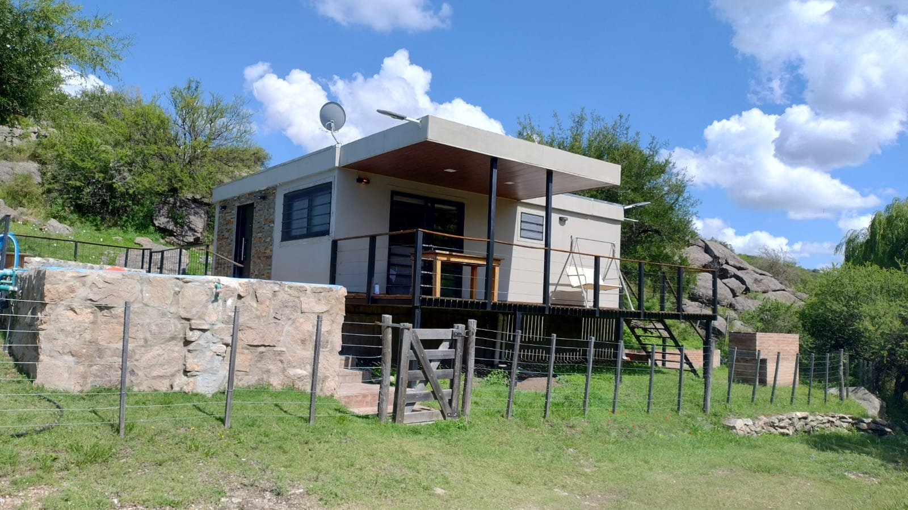

La historia de Terraza de Montaña comenzó mucho antes de la construcción de las cabañas. Durante unas vacaciones en Panaholma, Leonardo y Graciela descubrieron un lugar que los cautivó por completo: la tranquilidad de las sierras, el contacto con la naturaleza y el ritmo pausado de la vida serrana.
Impulsados por el deseo de crear un espacio para disfrutar y compartir esa experiencia con otras personas, en 2015 adquirieron el terreno donde hoy se encuentra el complejo. Desde el primer momento imaginaron un proyecto que creciera con el tiempo, respetando el entorno y ofreciendo un refugio para quienes buscan descanso y conexión con la naturaleza.
Con la experiencia de toda una vida de trabajo independiente, Leonardo participó personalmente en la construcción de las cabañas, levantando paso a paso un proyecto pensado para perdurar y seguir creciendo. Hoy, Terraza de Montaña es el resultado de años de esfuerzo, dedicación y amor por uno de los rincones más hermosos de Traslasierra.

Juntos desde 1997, después de años de trabajo, esfuerzo y proyectos compartidos, decidieron apostar por un sueño que los acompañaba desde hacía tiempo: crear un lugar donde otras personas pudieran disfrutar de la misma paz que ellos encontraron en Panaholma.
Amantes de la naturaleza, la tranquilidad y la vida simple, encontraron en las sierras de Traslasierra el lugar perfecto para imaginar una nueva etapa. Lo que comenzó como un destino de vacaciones terminó convirtiéndose en un proyecto familiar construido con dedicación, paciencia y mucho cariño.
Más que un alojamiento, Terraza de Montaña es el resultado de años de sueños, trabajo y amor por un lugar que cambió sus vidas y que hoy desean compartir con quienes buscan descansar, desconectarse y disfrutar de la naturaleza.
Panaholma es uno de esos lugares que parecen haberse detenido en el tiempo. Rodeado de naturaleza, aire puro y el paisaje único de Traslasierra, invita a bajar el ritmo y disfrutar de las cosas simples: el silencio, los amaneceres serranos y las noches llenas de estrellas.
Terraza de Montaña se encuentra en una zona tranquila y apartada, con vistas al valle y a las sierras que caracterizan a la región. A pocos minutos se encuentra el río Panaholma, reconocido por sus aguas cristalinas y sus balnearios naturales.
La ubicación permite visitar algunos de los destinos más conocidos de Traslasierra: Cura Brochero, Mina Clavero y Nono, disfrutando de excursiones, gastronomía regional y paisajes inolvidables.
Pero más que los lugares para conocer, lo que hace especial a este rincón de Córdoba es su tranquilidad. El canto de los pájaros, el sol iluminando las sierras, la presencia de la fauna local y la calma que se respira en cada momento convierten a Panaholma en un verdadero refugio.
Creemos que el verdadero descanso es cada vez más difícil de encontrar. Por eso creamos un espacio pensado para quienes valoran la tranquilidad, el contacto con la naturaleza y los momentos simples.
Sierras, aire puro y paisajes de Traslasierra como marco permanente de cada estadía.
Baja cantidad de unidades y más de 7.000 m² para disfrutar lejos de las multitudes.
Un emprendimiento construido con esfuerzo y una profunda conexión con el lugar.
"El diferencial es la paz."
¿Querés vivir esta experiencia?